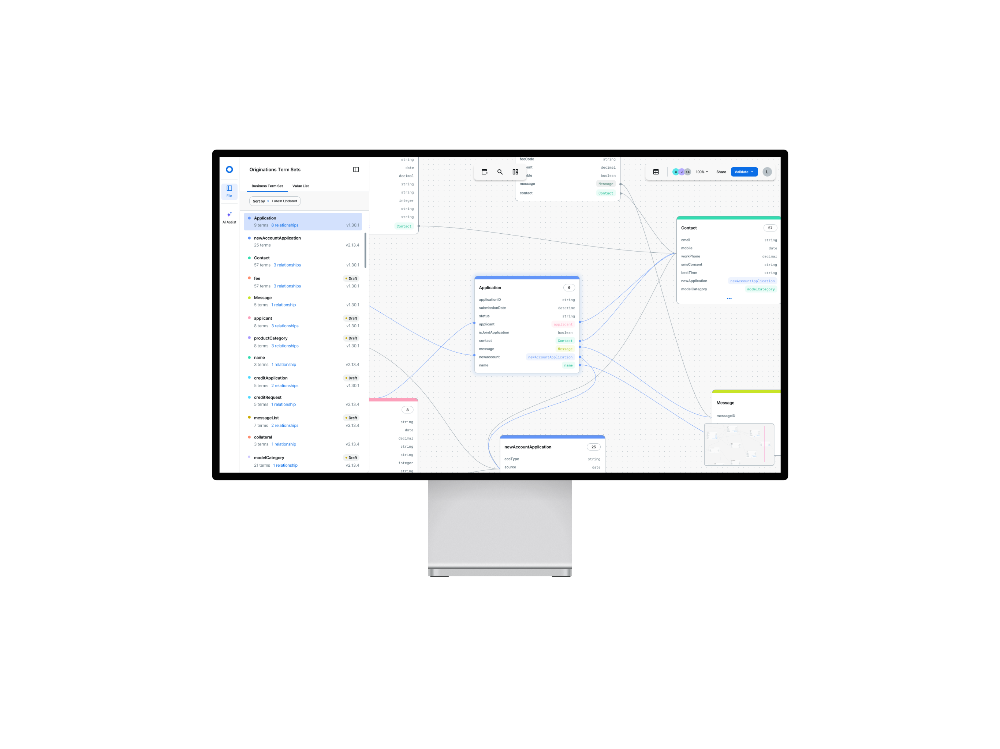
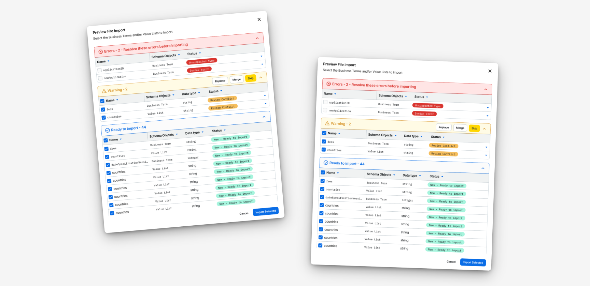

Business Terms Capability (BTC) is the FICO Platform's single source of truth for defining and organizing all incoming, outgoing, and internal decision service data schemas. By standardizing these business definitions across the platform, BTC eliminates conflicting data models, fragile business logic, and downstream system failures caused by upstream changes. I lead the designs for a centralized schema management system as well as a self-serve Micro Front-End (MFE) component.
I later expanded this work independently into an advanced concept exploring ERD canvas models and AI integrations.

Business Terms Capability (BTC) is a foundational service on the FICO Platform that manages schemas. It is the single source of truth for how data is defined, organized, and understood across every service a client uses.
Without it, every service defines its own data structure independently. As services multiply, so do conflicting definitions, misaligned schemas, and fragile business logic. A single upstream change risks breaking everything downstream.
I led the end-to-end design of BTC from a lightweight, embeddable MFE that unblocked engineering teams, through a full table redesign, to a canvas-based concept for exploring data relationships. After leaving FICO, I continued developing the concept without technical constraints to push the vision further.
removed weeks of cross-team coordination; users can now set up their own schemas in seconds
Technical and non-technical users can configure complex data structures without a solution consultant
product teams can drop the MFE into their own host environments with zero adjustments required
FICO's existing Decision Modeller Platform required users to constantly jump between disconnected services and rely on memory to track how their workflows connected.
There was no centralized way to define, view, or govern data schemas, which meant:
I partnered with the PMs for BTC and Decision Trees, the Front-End Architect, and a Product Designer from the Decision Trees team to define what an internal limited-availability release actually needed to include.
Through this discovery, four needs stood out:
Based on these priorities, I designed a standalone BTC micro-frontend, focused on letting users import their data and clearly view their resulting data structure.
Outcome: Immediate adoption by both the Decision Tree and Feature Management teams.
With the internal release live, I turned to a group we hadn't designed for yet: business users. I interviewed FICO's Solution Architects and Consultants — the people who build solutions directly with clients — to understand how they actually worked with data.
Key insight: dense tables work well for technical users used to Excel, but business users need a more visual way to explore data — a workspace for mapping out relationships between assets, which a flat table can't support alone.
Outcome: Strong positive feedback from internal Solution Consultants, who were eager to see the concept released.


Despite the enthusiasm for canvas, the team made the call to ship the table version only for beta — giving engineering the stability to launch confidently alongside other products releasing in parallel. In parallel, I kept developing the canvas concept.
This phase focused on:
"This is exactly what we need to build our solutions." "When will this be available? I want it now." — Feedback from FICO World 2025


After leaving FICO, I kept developing BTC on my own time, free of technical constraints, to explore where the concept could go next: